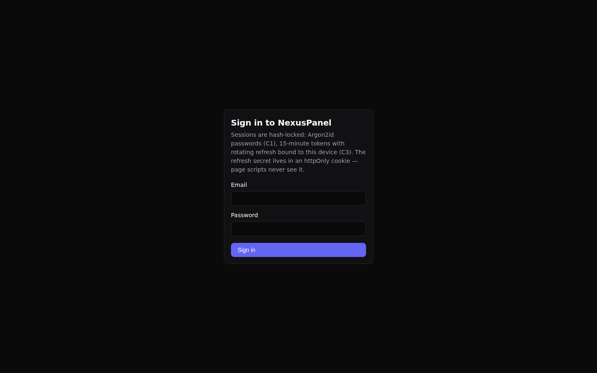
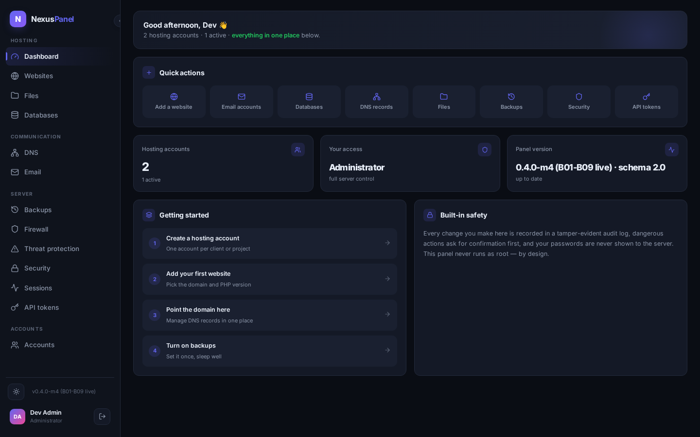
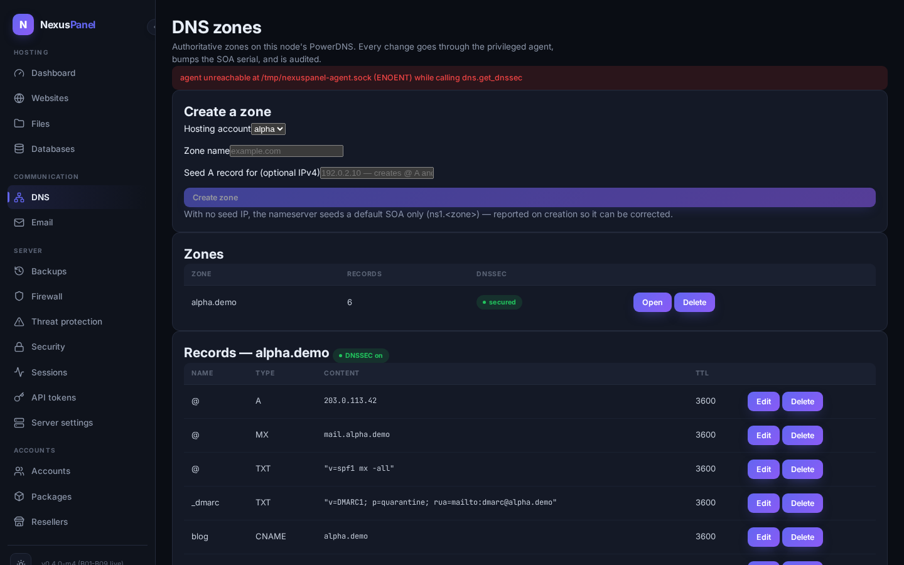
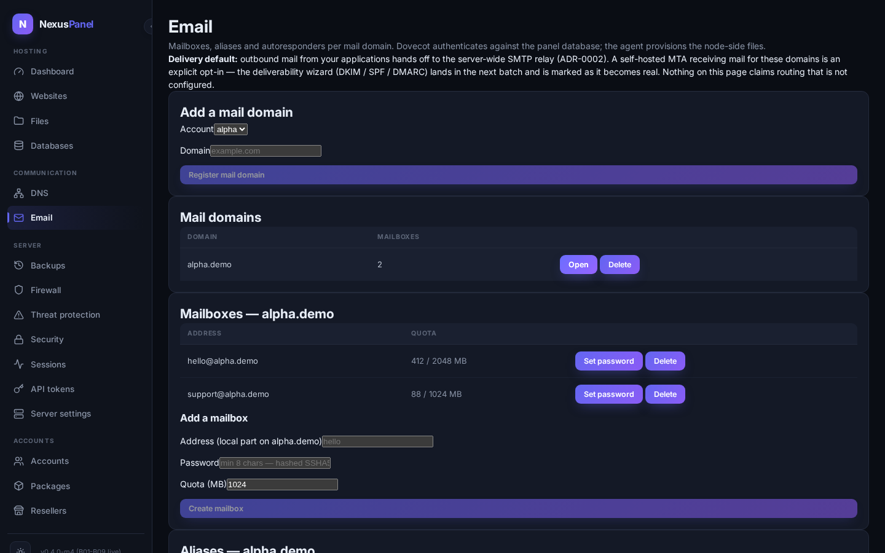
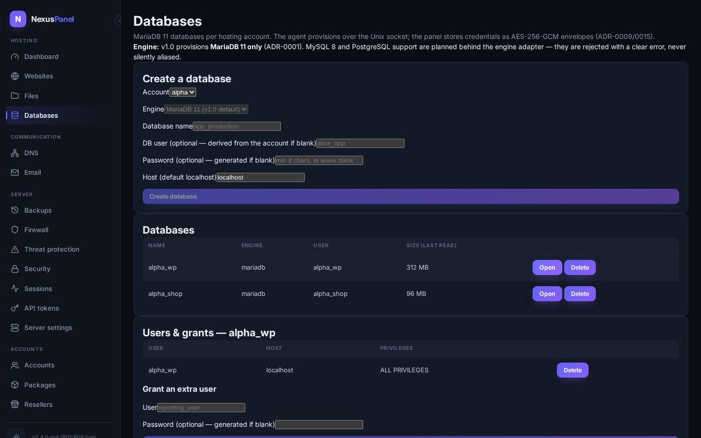
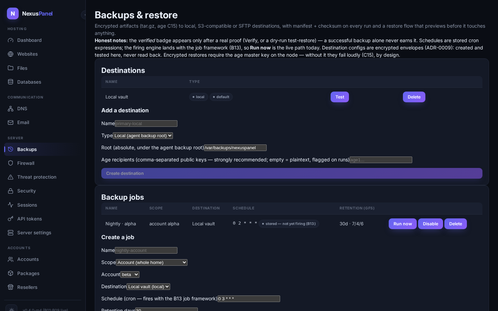
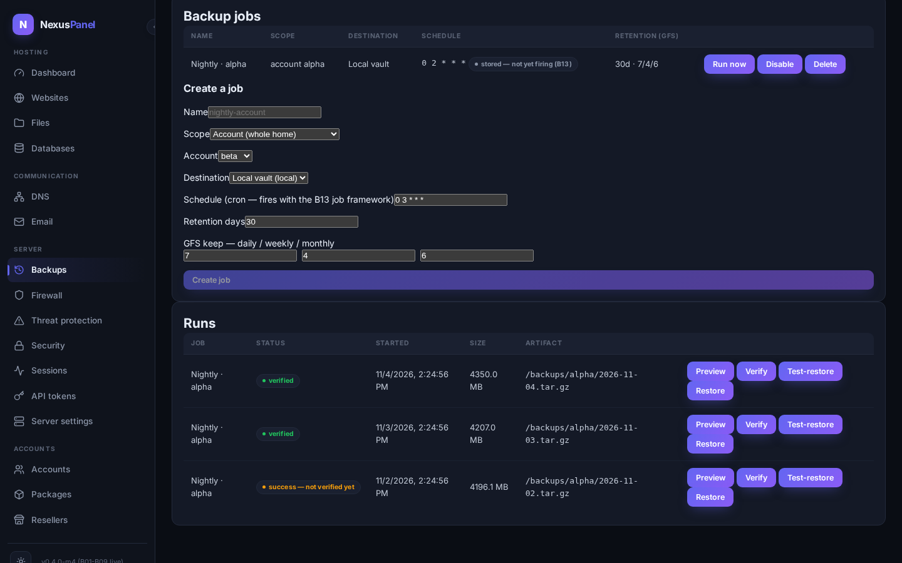

NexusPanel documentation
Self-hosted, security-first hosting control panel. These docs track the build: every feature phase ships its chapter and regenerated screenshots as part of the same merge (Definition of Done, BUILD_PLAN §1).
The shipped milestones prove the full vertical thread: login → create hosting account → signed command → privileged Go agent → hash-chained audit → live usage in the UI, then sites & domains, files/FTP/SSH, SSL (ACME http-01), per-site PHP, the config engine, DNS zones, email (with deliverability), databases, and encrypted backups & restore. Chapters for later phases are stubbed with their planned scope so the information architecture is reviewable now.
What works
| Capability | Where | Status |
|---|---|---|
| Admin login (Argon2id, JWT + rotating refresh, httpOnly cookie) | Getting started | live |
| Create a hosting account (agent executes the OS work) | First account | live |
| Tamper-evident audit log with chain verification | Audit log | live |
| Live account usage over WebSocket | Accounts | live |
| TOTP two-factor login + backup codes (C2) | Account security | live |
| Session inventory & per-device revocation (C3) | Account security | live |
| Scoped API tokens for automation (C4) | Account security | live |
| Access sharing — delegate accounts with audited roles (§11.3) | Accounts & packages | live |
| Resellers — nesting, branding, custom domains (C14) | Resellers | live |
| Server settings — whitelisted, audited platform config (D-11) | Server settings Configuration engine | live |
| Sites & domains — create, subdomains, aliases, redirects, logs | Sites & domains | live |
| Files, trash, FTP accounts, SSH keys | Files & trash | live |
| SSL — ACME http-01 issue/renew/revoke + manual install | SSL certificates | live dns-01 pending |
| Per-site PHP — FPM pools, versions, pool config | PHP per site | live |
| Config engine — versions, rollback, drift ledger | Configuration engine | live |
| DNS zones — PowerDNS records, DNSSEC, checks, export | DNS zones | live templates/import planned |
| Email — mailboxes, aliases, autoresponders (Dovecot SQL userdb, ADR-0013) | live | |
| Deliverability — DKIM/SPF/DMARC one-pass + mail queue tools (ADR-0014) | live relay stored — not yet routing | |
| Databases — MariaDB 11, least-privilege grants, encrypted credentials (ADR-0015) | Databases | live SSO consumer at B14 |
| Backups & restore — encrypted artifacts (age C15), GFS retention, restore-with-preview, proof-earned verified badges (ADR-0016) | Backups & restore | live schedules fire at B13 |
| Firewall & bans — managed nftables table, fail-closed apply with self-lockout guard, fail2ban jail health + audited unban (ADR-0016) | Firewall & bans | live |
| Threat protection — per-site ModSecurity (off/detect/block, paranoia, exclusions, health-gated + versioned), ClamAV scan & quarantine with audited delete/restore (ADR-0017) | Threat protection | live scheduled scans at B13 |
Screenshots (P4 set, auto-generated)
Regenerated by the Playwright rig on every UI-affecting merge —
e2e/screenshots.mjs →
docs/portal/static/screenshots/p4/ (20 shots: login through
sessions, including the DNS zone editor, the email deliverability view,
the databases detail and the backups panel with its run journal).






